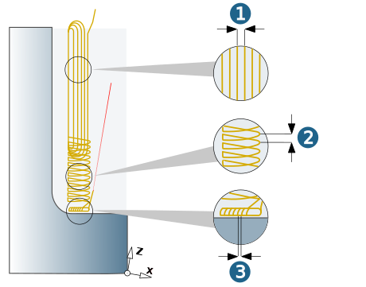
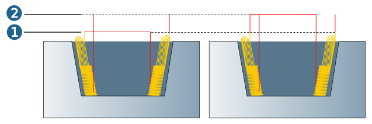
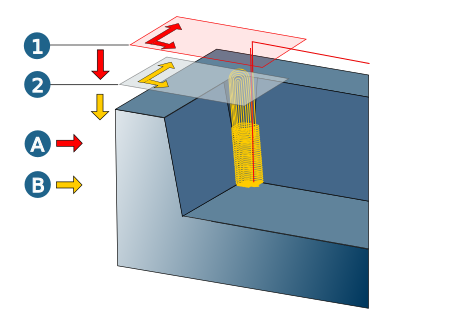

Parameters
Define machining parameters.
Parallel strategy infeed
Horizontal stepover (1): Define the infeed for machining with a parallel strategy in the upper area of the vertical corner. Specified as a length dimension or as a factor of the tool diameter: J:ae/T:Dia (= infeed width/tool diameter). Reference to different definitions is given at the appropriate places.
Corner rest infeed
Vertical stepdown (2): Define the infeed for machining with a Z Level strategy in the lower area of the vertical corner. The vertical stepdown determines the number of machining planes.
Bottom side step
Side stepover (3): Define the lateral infeed for the area of the bottom surfaces.
|  |
Allowance
Allowance (1): remaining material on the workpiece. Calculated in direction of the surface normals. Added to the Clearance parameter during machining (see section Check tool).
Retract mode
The retract mode defines the Z level where the system executes horizontal infeed movements. The mode that is set applies to all cutting modes.
Clearance distance (1): all retract and infeed movements are executed via the clearance distance.
Starting and end positions of an infeed movement in rapid are displaced in Z direction in order to guarantee a collision-free linear infeed movement. The clearance distance is added to these positions.
Clearance plane (2): all retract and infeed movements are executed via the clearance plane.
|  |
Clearance
Clearance plane and clearance distance apply in the direction of the Z axis of the current frame.
Clearance plane (1): Plane for rapid tool movements. Specification in absolute dimensions Define the clearance plane by right-clicking on the icon. Select a point and confirm the selection.
Warning
Traversing movements on the clearance plane are not checked with regard to collisions. Therefore, this plane must be placed at a sufficient distance above the surface of the workpiece.
Clearance distance (2): Distance to the current toolpath to be milled. Above the clearance distance, infeed takes place as rapid in the Z direction (A); below the clearance distance infeed takes place at the Z feedrate (B).
|  |